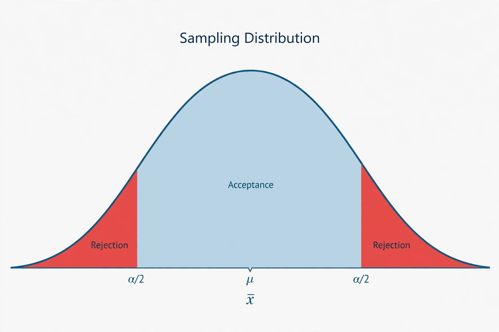

Statistical hypothesis testing

[Image: A sampling distribution with rejection regions shaded in the tails]
Statistical hypothesis testing is a method of statistical inference used to decide whether data are strong enough to reject a default assumption, the null hypothesis, in favour of an alternative hypothesis.
A test computes a test statistic and asks how surprising it would be if the null hypothesis were true, summarised by a p-value. If the p-value falls below a chosen significance level, conventionally 0.05, the result is declared statistically significant.
Errors and criticism
A type I error rejects a true null hypothesis (a false positive); a type II error fails to reject a false one, and one minus its probability is the test's power. The framework was developed by Jerzy Neyman and Egon Pearson, building on ideas of Ronald Fisher.
Routine misuse of significance testing — especially treating 0.05 as a magic threshold and publishing only significant results — is blamed for part of the replication crisis in psychology and other fields; the American Statistical Association issued a widely cited statement on p-values in 2016.